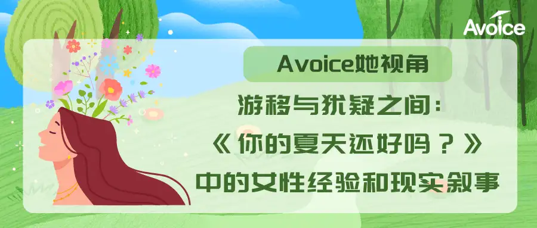
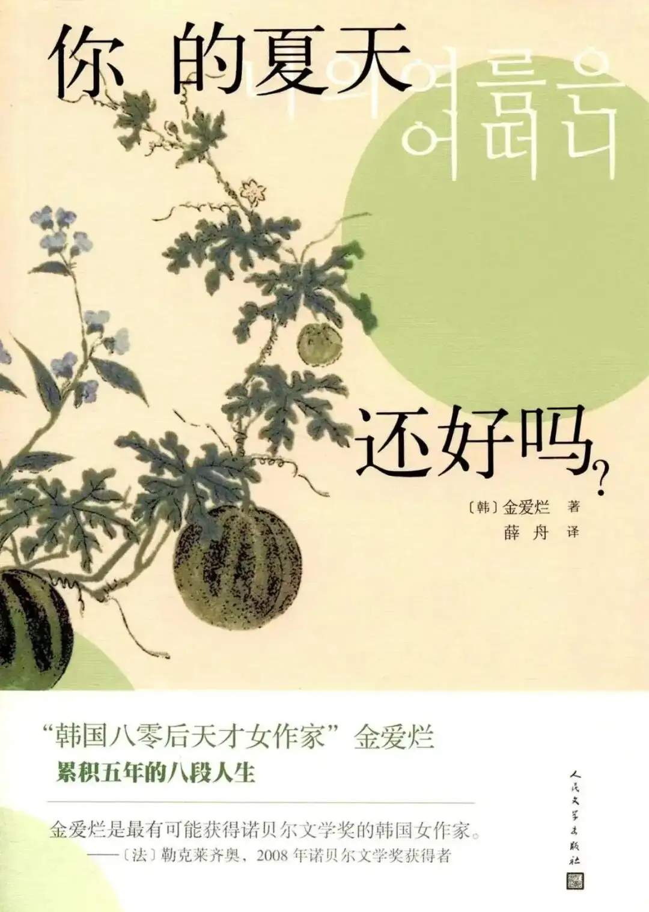
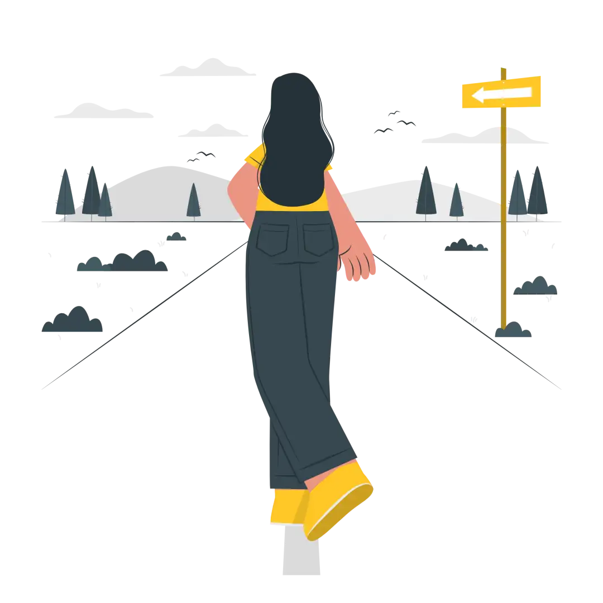
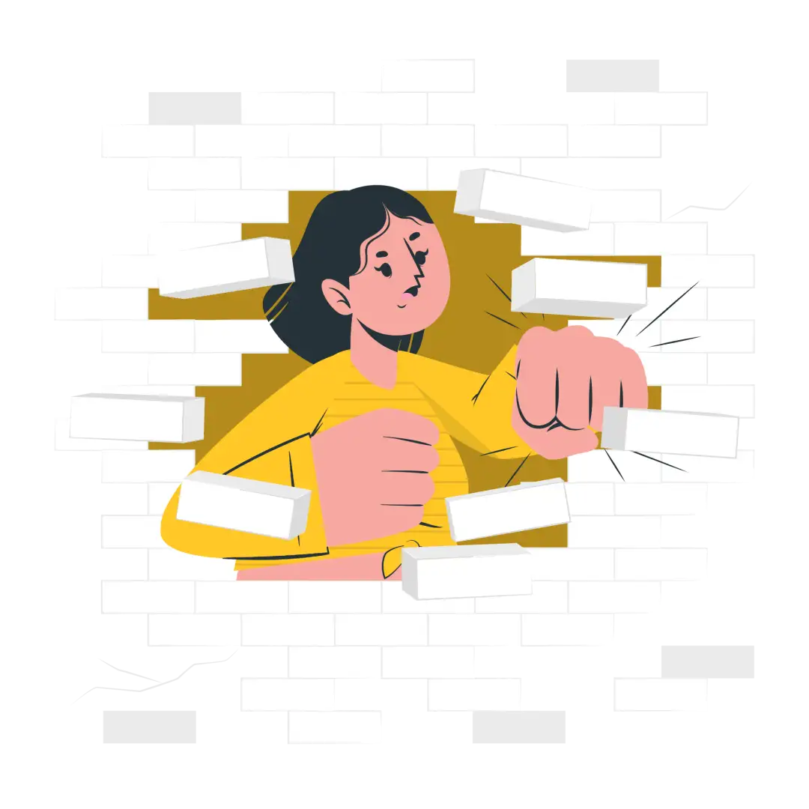

有人试图重构性别叙事的框架，在旧人固守的城墙外开拓一片无人涉足的净土；有人试图向前追溯女性历史的种种，以期唤醒沉睡的茧再度破土而出；有人驻守当下，在个人生命的点滴中捕捉何以女性的可能。《你的夏天还好吗？》是金爱烂在此做出的一次尝试，八段故事，在虚构中无限逼近生命经验的真实，在喧嚣中重返属于女性的声音。
01
是谁转动 “一天的轴”
“电饭锅灯光所在的位置就像空腹到食欲的距离，似近似远，若隐若现。还像每个人都踩在脚下却无法拥抱全部的行星的边缘，那是饥饿的尺寸。”
《一天的轴》的主角是一位机场保洁员——琪玉女士。失责的丈夫早早去世，家中的独子因为盗窃和暴力入狱，琪玉女士因为压力过大开始掉发，明明才至中年，头顶却几近光秃，被迫接受额外的审视，被迫在叹息、怜悯和惊愕的缝隙中过活。琪玉女士的生活质量也和头发一样稀薄：穿着奥特莱斯买来的防风夹克，背着冒牌的古驰手提包，在机场做保洁的同时还兼职发传单。即便如此，她仍对生活有种厚重到丧失重量的热忱：在不同的节日烹饪各色的食物，兢兢业业清理机场卫生间的一切污秽，把报纸上健康美好的报道剪下来寄给儿子。

可即便琪玉女士已经如此努力地工作，在她提出可以帮忙顶替富平大嫂时，部长却没有表示感激，反而因为她光秃的头顶面色铁青、瑟瑟发抖。即便琪玉女士已经如此尽责地将儿子抚养成人，儿子却既不歉疚、也不感激，第一次给母亲寄信却只写了一行字——“妈妈，给我买点零食”。琪玉女士用力留下的痕迹被悉数抹平，被忽视的无力感从书页中溢出，蔓延到每一个读者身上。

世界在一刻不停地周转，琪玉女士仍旧被困于肮脏、混乱的卫生间中，在繁重的劳动里不得脱身，独自一人面对五十岁的茫然、焦虑、凄凉。任劳任怨的付出没能化作荣誉的勋章，光秃的头顶却成为羞耻的烙印。众多像琪玉一样的女性在狭小的空间里铺就的是所有人生命的底色，是每个人都曾经过但从未驻足的角落。众人安睡的时刻，正是像琪玉女士一样的人不辞辛劳地拨动世界的时钟，转动“一天的轴”。
众人以为理所应当的一切，却是无数像琪玉女士一样的女性竭尽全力维持的平静和安宁。这些女性却被历史的话语长久排斥在叙事结构之外，在复杂而庞大的现代化系统中流于无名，在悄无声息又残忍至极的性别暴力中沦于湮灭，成为荒原中无依的灵魂、空旷岛屿上摇摆的根。《一天的轴》带我们穿过忙碌、明亮的仁川机场，抵达那间无人在意的卫生间，走进一位女性的生命核心，与之共享刻骨的群体记忆。
02
在“三十岁”的门槛上回望
“所有的人都开玩笑说：‘只有通过考试，才能摆脱这个岛。’那时我感觉你很像姐姐，然而现在，我也三十岁了。这期间，姐姐也度过了无法用几行文字概括的岁月吧？就像风带走了季节，岁月也从姐姐那里夺走了许多东西吧？轻而易举错过，无法单纯称其为‘机会支出’，直到现在依然痛彻心扉的东西；说出来也只能独自承受的秘密和心事。”
《三十岁》是全书的末篇，金爱烂一改之前的第三人称视角，在此篇中以书信体将故事娓娓道来。书信中的“我”起初自命不凡，考取法语系，坚信生活中的一切磨砺都会在日后成为经验和智慧。可是现实远远不是如此，甚至残酷至极：找工作异乎想象的艰难，父亲遭遇车祸，家庭摇摇欲坠，而“我”终于在前男友的鼓吹下落入传销公司深不见底的骗局。“除了‘只要努力，谁都可以实现梦想’，当今世界还有哪句话能够成为让人愿意相信的教理？”——“我”仍然对生活抱有一丝侥幸，却最终不免于在日复一日的欺骗中逐渐麻木。在传销中出卖人际关系的自己实际上也出卖了自己的灵魂，“我”丧失了青春的激情，丧失了与沉底的命运对抗的勇气，甚至把毒手伸向“我”曾经辅导过的女孩——最后“我”才得知她被巨额债务和崩溃的人际关系折磨至自杀，虽然最终挽回了性命但已变成了植物人。

《三十岁》是彼端的倾诉，也是向内的反省，可以看出金爱烂对女性成长经验的至深同情与共情。自述不是为了脱罪，而是敢于面对生活的虚荣与羞辱、奋斗与溃败。首尔凌晨的霓虹灯、考试院狭窄黑暗的隔间、勤奋而天真的大学时光、落入传销的至暗时刻、出卖信任的矛盾与懊悔，都是不容回避的生命印记，在逐渐老去的肌肤和渐长的年岁里留下生命最真实的即景。
✦
•
✦
金爱烂塑造着一种独立的女性叙事，不仅仅跳脱出自我客体化的传统路数或者扁平化地把男性经验作为摹本，而是
划定出一片独属于女性的语言空间，在游移与犹疑中进行创伤的表白和自我解构。我们相信女性的声音有其惊人的韧性，相信女性的经验能在黑暗的虚无中透射出无穷的光亮，相信那席卷你我左右的挫折是重建的根基。
最后，就以金爱烂在书中的话作结吧：
不知道离我而去的是什么，
我想为它取名字。
连缀起几个长长的句子，
那是谁也喊不出的名字。
即使全部念完也无从知晓，
只能让你试着再念一遍。
撰稿｜王怡娴
审校｜Dolcia
排版/封面｜池一诺
图片来源｜storyset